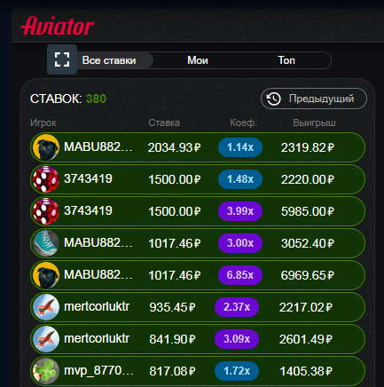
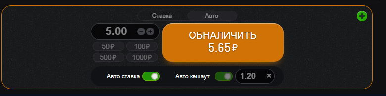
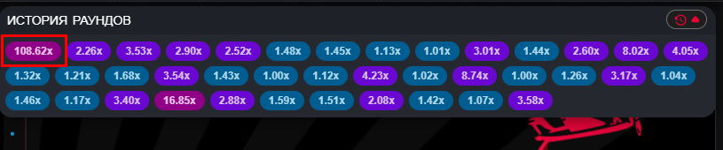
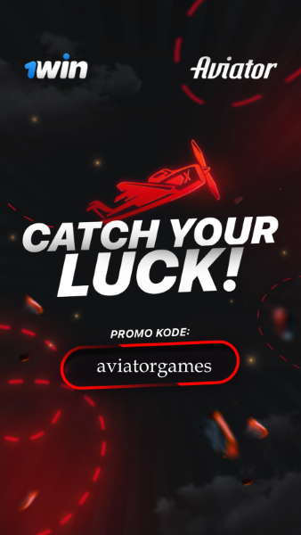

Авиатор - como ganhar muito dinheiro
Se você perseguir o grande, perderá o pequeno. É assim que descreveríamos as táticas básicas para ganhar dinheiro no caça-níqueis Aviator. O jogo falhou e uma drenagem completa do depósito é construída apenas em sua ganância e falta de resistência, mas recomendamos uma abordagem completamente diferente para o jogo.
Portanto, o primeiro passo é decidir sobre o tamanho e o tipo de apostas. Como você sabe, a aposta mínima é de 10 centavos e o número máximo de apostas simultâneas é de dois. O fato é que a estratégia de jogar Aviator para uma e duas apostas simultâneas é diferente, então vamos considerar cada uma separadamente.
Estratégia de Aviator para uma aposta
O jogo de uma aposta é a solução mais adequada para iniciantes. Sua atenção não ficará dispersa, o que permitirá que você acompanhe cuidadosamente o processo de ganhar dinheiro no Aviator.
O primeiro passo é determinar o saldo do depósito com o qual você vai começar. É essa escolha que determina o valor da taxa na qual você jogará. Nossa recomendação é que você deve ter dinheiro suficiente em sua conta do cassino online 1win para 200 apostas (mínimo 100). Ou seja, se você tem 10 dólares em sua conta, recomendamos apostar a 10 centavos. Se a conta tiver 20 dólares, você já pode apostar em 200 rodadas. Suas apostas podem ser maiores, mas neste caso você precisa ter mais dinheiro em sua conta.
Depois de determinar o tamanho da aposta para uma rodada no Aviator, é necessário definir a estratégia e a tática. Oferecemos três estratégias de como jogar Aviador:
Esta estratégia não lhe trará um grande jackpot em um curto espaço de tempo, mas permitirá que você se sinta confortável ao jogar. No caso de você perder uma aposta - você não perde tanto e principalmente esta estratégia se concentra em economizar seu dinheiro. A essência da estratégia - suas apostas são pequenas e cada saque em cada rodada deve ter um multiplicador de x1,20-x1,21. Você pode habilitar as opções de saque automático e aposta automática. Isso permitirá que você minimize o número de rodadas perdidas e aumente sistematicamente o seu saldo. Depois que o equilíbrio aumentar, você pode avançar para probabilidades mais altas. Assim, você aumenta seus ganhos no caça-níqueis Aviator passo a passo.
Recomendamos escolher esta estratégia para jogadores que não têm restrições de dinheiro ou têm grandes fundos disponíveis em sua conta de casino online 1win. Ao usar essa tática no Aviador, você joga probabilidades de x2-x3. A probabilidade de resultados com um multiplicador de 2-3 é de 40-42%. Mas às vezes, quando você está confiante em seus próprios pontos fortes e não houve uma grande multiplicação por muito tempo, você pode arriscar, oscilando com coeficientes elevados. Com um pouco de sorte, você não apenas manterá o equilíbrio positivo, mas também poderá aumentar significativamente sua quantia em dinheiro.
Esta é uma estratégia para os realmente sortudos! As probabilidades de mais de 100 caem em média uma vez a uma hora e meia. Portanto, olhamos quando houve o último resultado com uma multiplicação de x100 ou mais, pulamos uma hora e começamos a apostar ativamente. Boa sorte!
Estratégia para jogar no Aviator por dinheiro em duas apostas simultâneas
Essa estratégia não é muito diferente de jogar uma aposta, mas requer mais atenção. Um jogo com risco moderado é considerado a opção ideal para a maioria dos jogadores. Recomendamos que para a primeira aposta escolha a aposta automática e o saque automático na multiplicação x1,2, e a segunda aposta de acordo com a estratégia de risco moderado, que foi descrita acima para o jogo com uma aposta.
Se quiser arriscar em um jogo de duas partes, recomendamos parar na multiplicação de x40 por uma aposta e x100 pela segunda. Assim, você poderá evitar gastar todo o saldo de uma vez e esperar coeficientes grandes.
Conclusão
Nenhuma das estratégias e táticas descritas é garantia de sucesso. Você está sempre livre para ter novas ideias, assumir riscos e vencer. Se você conseguiu inventar sua própria maneira de ganhar dinheiro no jogo Aviator 1win, sinta-se à vontade para compartilhá-la na seção de Avaliações especiais em nosso site.
Jogue Aviador e ganhe!
